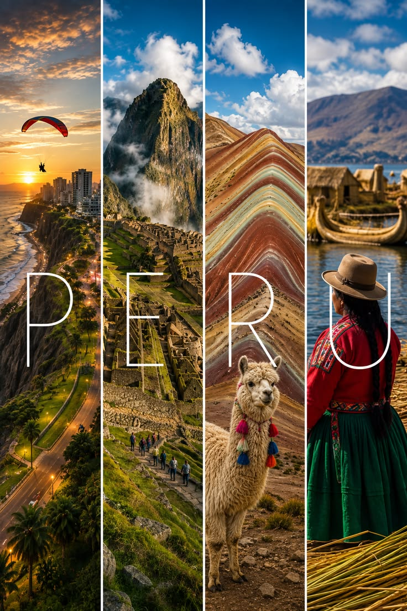
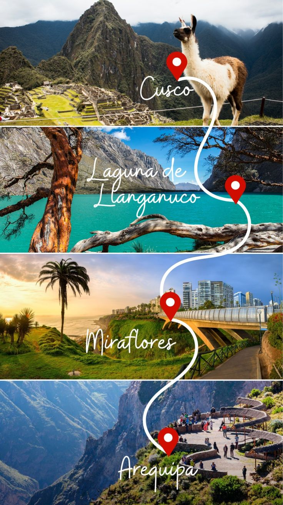

Elegir el mejor estilo de viaje a Perú no tiene por que ser dificil, en peru puedes combinar actividades turisticas en las diversas excursiones turisticas en peru, solo tienes que darle prioridad a tu instinto y pasión viajera para tener la mejor experiencia en tu viaje a Perú, como sigue:

El turismo de trekking por la cordillera andina es un reto por la altura donde se camina, como los nevados del Cusco, Ausangate, Quelcaya o la Cordillera Blanca, a esta dificultad se suman las pendientes abruptas como la Volcán Misti yCañón del Colca, este es un estilo de viajes de exploración o viajes de aventura – caminatas, en ambos casos se realizan en espacios al aire libre propios del turismo de naturaleza y aventura en el Perú.